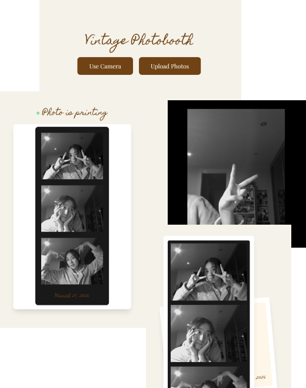
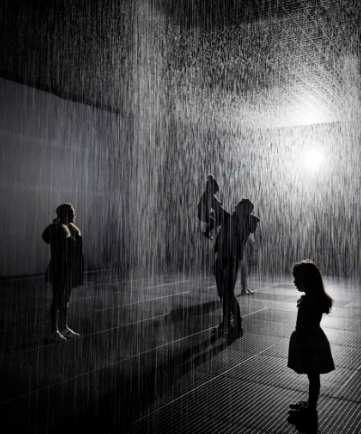
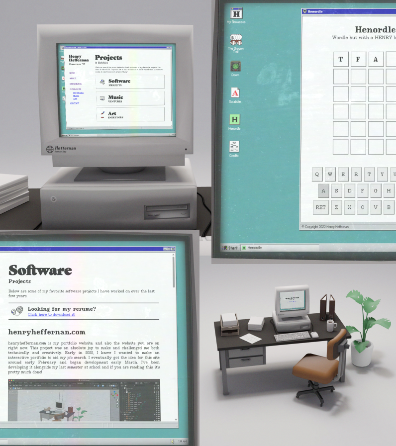
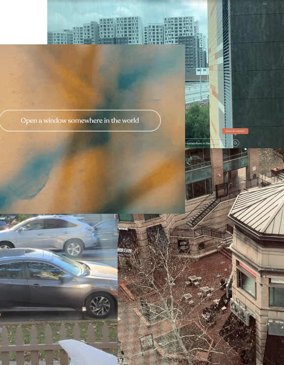
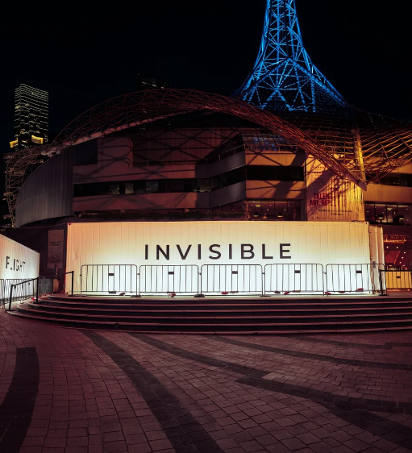
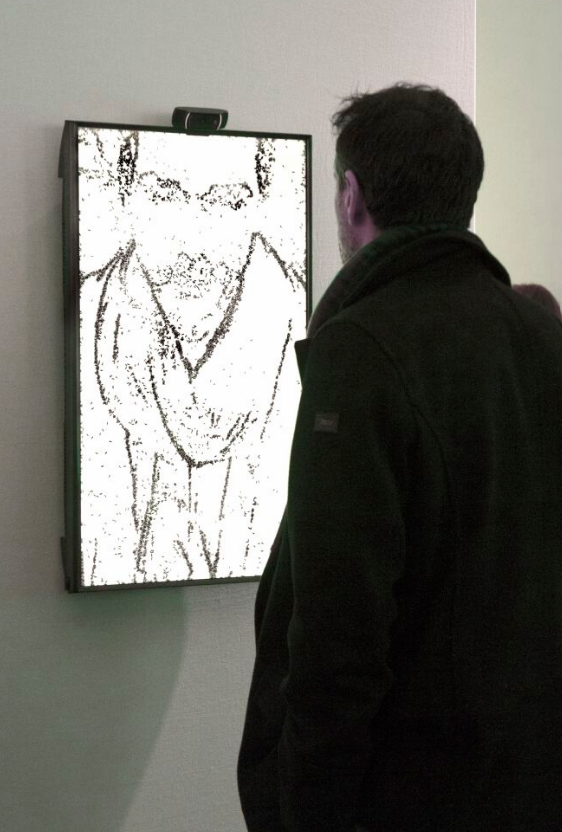

My Vintage Photobooth. Marisa C (The Mesh Times). March 5, 2025.
When I enrolled in this class, I kind of came in with an idea of what I wanted to create because of these types of digital photobooth websites. As someone who loves the idea of capturing memories through photos and the convention of photobooth strips for its 'living in the moment' meaning, I really wanted to create something similar to these digital photobooths that really communicate youth, young and free. Especially as a digital booth really reflects the 'living in the moment' from it's accessibility as a digital screen.

Rain Room. By Random International. 2023
The Rain room is a monumental interactive work that merges art, technology, and nature. It creates a theoretical space where participants who visit this experience are invited to respond and question their relationship with the installation, and on a deeper level, their relationship with nature and the environment.
I was particularly intrigued by this work as I have always been someone who loved the rain.

Henry Heffernan's Portfolio Showcase 2022.
Henry Heffernan's portfolio explores his works through the form of an interactive desktop simulation. The presentation is through 3d design with clear mouse tracking as the screen responds by following the movement of the user's cursor. The aesthetic and atmosphere of this site furthermore reminds me of the 'the Stanley Parable game' which I really like as it provokes a certain surreal feeling.

Windowswap. Sonali Ranjit, Vaishnav Balasubramaniam. 2020.
During covid when everyone was locked inside with no way to travel in the unforeseeable future, windowswap was created as a way for people around the world to help each other explore the planet safely. Website visitors were thus able to 'open a new window somewhere in the world' with one click of a button, being transported to random views around india, italy, new york and etc.

DARKFIELD. Glen Neath, David Rosenberg. 2016.
Darkfield is a series of immersive 20-minute theatrical experiences staged within shipping containers in total darkness. With the use of 360 degree binaural audio and sensory effects paired with intense narratives, DARKFIELD challenges perception and create disorienting experiences ranging from plane crashes to entering dream-like states.

Portrait on the Fly. Christa Sommerer & Laurent Mignonneau. 2015.
A interactive artwork where the facial features of visitors standing in front of a monitor are extracted and visually reproduced by several thousand flies that gather together accordingly on the white screen. When the visitor moves even a little however, the flies dissolve and buzz around again as if disturbed until they detect another visitors face and once again form another shape.